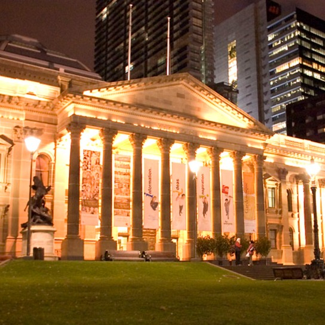
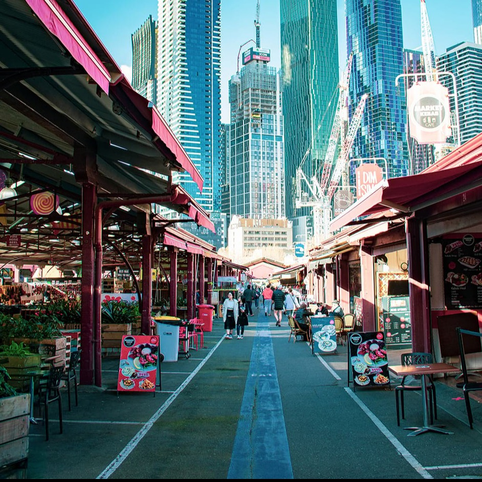
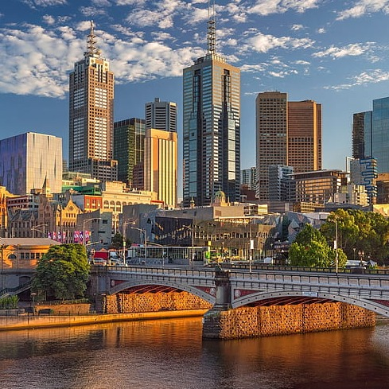

探索墨爾本的獨特魅力！
從充滿活力的咖啡文化到藝術的繁榮，這座城將帶給您難以忘懷的旅遊體驗。
墨爾本著名景點

墨爾本圖書館
State Library of Victoria

維多利亞市場
Victoria Market

雅拉河
Yarra River

大洋路
Great Ocean Road
一同踏上墨爾本之旅，共同探索這座城的奇妙與美麗！
墨爾本地圖
墨爾本位於澳大利亞東南部，坐落在維多利亞州的海岸線上。它座落在墨爾本大都會地區，是該國第二大城市，也是維多利亞州的首府。 墨爾本位於巴士海峽（Bass Strait）附近，擁有豐富的自然和地理景觀。它坐落在廣闊的平原上，被山脈和河流所環繞。該地區的氣候屬於溫帶海洋性氣候，夏季溫暖而潮濕，冬季涼爽而潮濕。